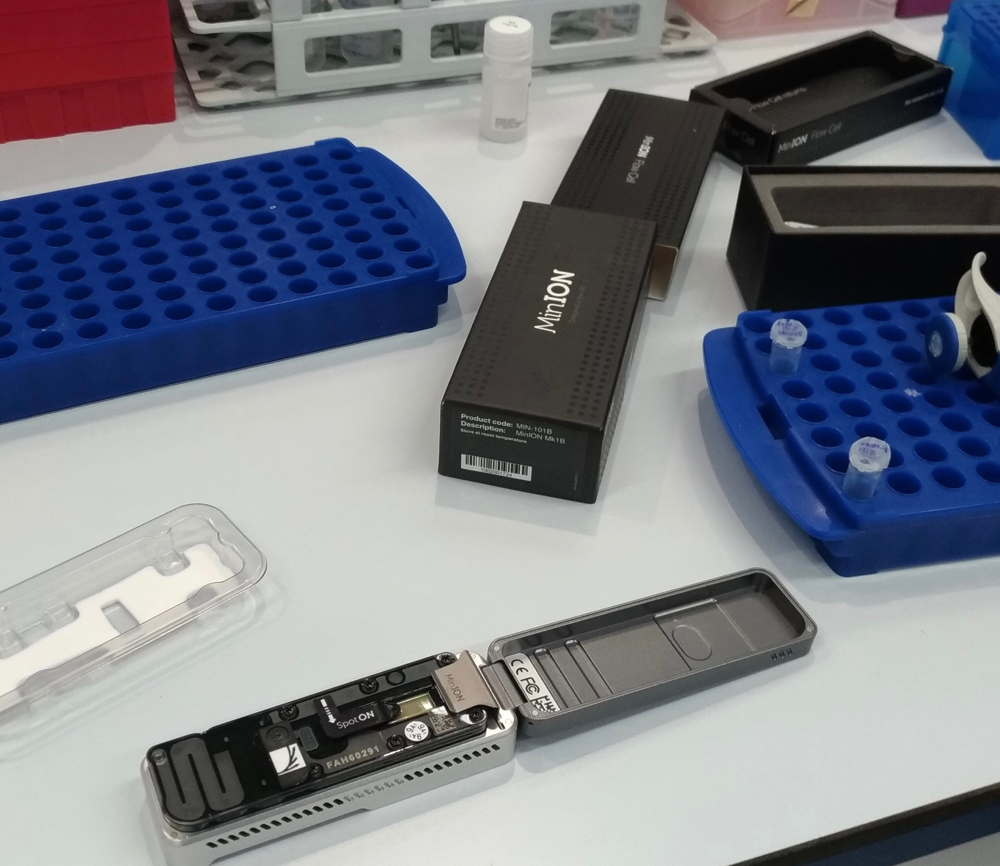

Research Interest
My broad research interest is to use bioinformatic and molecular biology to answer exciting evolutionary questions. In this sense, I’ve been open to work with multiple organims (mostly social insects) and research topics. That being said, understanding how complex life traits evolve in bees is my scientific inspiration.
Currently, in my Postdoc project at University of Brussels, I have a FNRS research fellowship to study queen determination in Melipona bees (Genomic, epigenomic and transcriptomic determination of queens in Melipona bees).
In this project, I am revisiting Dr. Kerr's hypothesis of a two loci genetic determination system in Melipona bees through the use of OMIC data. In parallel, I’m involved in the following studies:


- 

Advising

MSc. Paulo Cseri Ricardo
[2018-current] PhD student from University of São Paulo. I co-advisor Paulo is his PhD project, where he searches for genes related to parasitic behaviour in bees through transcriptomic analyses.
Larissa Logullo Piconi
[2015-2018] I have advised Larissa during her bachelor in biology. She looked for general patterns of gene expression in bee nurses and now she inspires others being a Biology teacher <3.
Awards
Publications
Poster Panel
CSHL (2021)

SMRT Leiden (2019)

ESA (2018)

ICE (2016)

ESA (2015)